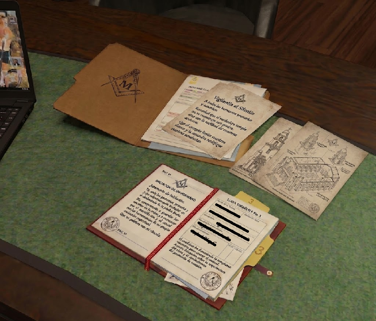
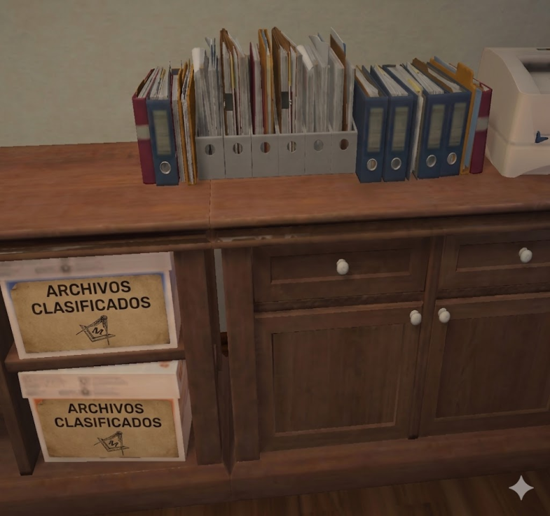
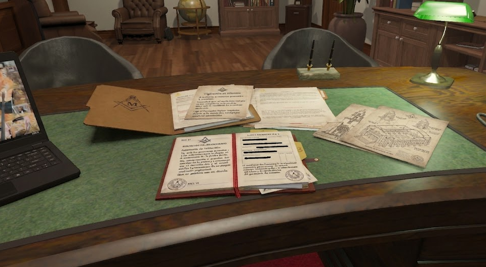

EXPEDIENTE: OMEGA-LS
// FILTRACIÓN LOGIA: LOS SANTOS //
REPORTE CREADO: Sector 4 - Darknet Node.
Una reciente filtración de documentos clasificados del Gabinete de Inteligencia ha desatado una ola de especulación en círculos académicos, esotéricos y digitales. Los archivos, cuya autenticidad aún no ha sido confirmada oficialmente, apuntan a una supuesta red de conocimiento compartido entre logias masónicas de distintos lugares de la ciudad y posibles contactos con inteligencias no humanas.

Los documentos, que comenzaron a circular en foros privados hace apenas dos semanas, describen reuniones celebradas en lugares asociados a la masonería, algunos de ellos situados en ubicaciones remotas y otros integrados en la ciudad bajo apariencia de edificios comunes. En estos textos se hace referencia a "intercambios de información" con entidades descritas como "no originarias de este plano geográfico o estelar".
Uno de los aspectos más llamativos de la filtración es la mención reiterada de símbolos y geometrías que coinciden con patrones encontrados por la ciudad de Los Santos. Según los documentos, estos patrones no serían meramente decorativos, sino que funcionarían como una interfaz de comunicación o anclaje energético.

Además, los archivos incluyen planos que apuntan a lo que se denominan "sitios de convergencia". Algunos investigadores independientes de nuestro club han comenzado a analizar estos planos para identificar edificaciones, sugiriendo que podrían corresponder a instalaciones masónicas subterráneas aún no documentadas oficialmente por el Ayuntamiento de Los Santos.

La masonería, históricamente rodeada de misterio y simbolismo, ha sido objeto de numerosas teorías a lo largo de los siglos. Sin embargo, expertos en historia señalan que no existen pruebas verificables que vinculen a esta organización con actividad extraterrestre. Aun así, la naturaleza detallada de los documentos filtrados ha generado dudas incluso entre los más escépticos del FIB y la IAA.
Por el momento, ninguna institución gubernamental ha emitido declaraciones al respecto. Mientras tanto, el debate continúa creciendo, donde algunos consideran la filtración como la evidencia definitiva de un secreto largamente oculto, y otros la califican como una elaborada obra de desinformación para tapar proyectos militares oscuros.
Sea cual sea la verdad, este episodio vuelve a poner sobre la mesa una pregunta persistente:
¿Cuánto de lo que creemos saber sobre las estructuras de poder y conocimiento en el mundo permanece aún en la sombra?